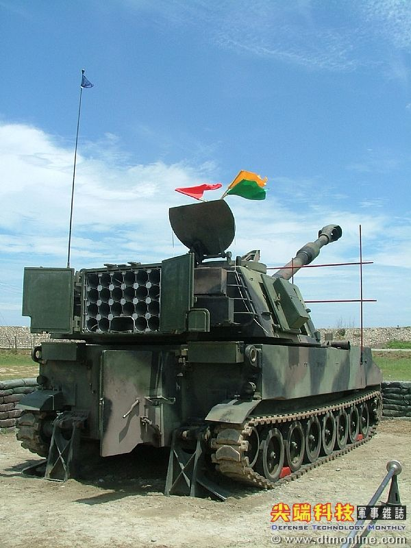

笑話分享 從18歲進入職場，經常遇到肯「虐待」我的主管；要不就是賺得很多，卻摳得要死的老闆， 極盡所能的要求我為他無償加班或犧牲休假；要不就是遇到龜毛至極的主管，要求我遵守他 的生活習慣與處事哲學；更多的，是混到無與倫比，卻總讓我做到死的老大級豬頭。每每遇 到這種角色，我都為了「怎麼可能會賺錢？」這個問題而困擾的想死，每次離開那個職位時， 總是出去大快朵頤一番，來犒勞自己這段日子的辛勞奉獻，但，我卻總是掉入所謂「勝者的詛 咒」，自以為脫逃，卻又什麼都拿不到的痛苦中。